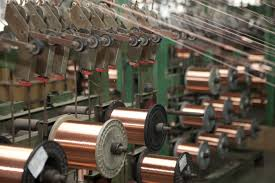

Past and Present of Fast Fashion and Sustainability
Economic Impact by the Numbers
- Fashion is a $1.2 trillion global industry
- $250 billion spent on fashion annually just in the US
- Fashion and apparel industries employ 1.9 million people
- New York City and Los Angeles are two largest fashion hubs in the United States
- With United States' concentration on higher-value parts of the apparel global supply chain with higher education and training, R&D, Marketing, and Design are popular roles.
Fashion is a structurally diverse industry, ranging from major international retailers to wholesalers
to large design houses to one-person design shops. It employs people across occupations—including
fashion designers, computer programmers, lawyers, accountants, copywriters, social media
directors, and project managers. According to a report by the California Fashion Association,
manufacturing is only a fraction of the modern apparel industry as “it is a highly sophisticated
industry involving fashion and market research, brand licensing/intellectual property rights, design,
materials engineering, product manufacturing, marketing and finally, distribution.”
U.S. Apparel Manufacturing Produces High-Fashion, High-Value Products
The fashion industry in America has changed dramatically over the past century. In 1931, the
Garment District in New York was home to the highest concentration of apparel manufacturers in
the world.6 Many of these jobs have since moved offshore. Over the past two decades, U.S.
employment in the apparel manufacturing industry has declined sharply, from almost 940,000 in
1990 to about 144,000 in 2013.
Still Curious About Economic Harm?
Read More Here!

The Environmental Impact of Fast Fashion
Environmental Hazards During Production
The first step in the global textile supply chain is textile production, the process by which both natural and synthetic fibers are made. Approximately 90 % of clothing sold in the United States is made
with cotton or polyester, both associated with significant health impacts from the manufacturing and production processes. Polyester, a synthetic textile, is derived from oil, while cotton requires large
amounts of water and pesticides to grow. Textile dyeing results in additional hazards as untreated wastewater from dyes are often discharged into local water systems, releasing heavy metals and other toxicants
that can adversely impact the health of animals in addition to nearby residents.
Textile Waste
While getting finished garments to consumers in the high-income countries is seen as the end of the line for the fashion industry, environmental injustices continue long after the garment is sold. The fast fashion
model encourages consumers to view clothing as disposable. In fact, the average American throws away approximately 80 pounds of clothing and textiles annually, occupying nearly 5% of landfill space. Clothing not
sent directly to the landfill often ends up in the second-hand clothing trade. Approximately 500,000 tons of used clothing are exported abroad from the United States each year, the majority ending up in LMICs.
In 2015, the United States exported more than $700 million worth of used clothing. Second-hand clothing not sold in the United States market is compressed into 1000-pound bales and exported overseas to be
“graded” (sorted, categorized and re-baled) by low-wage workers in LMICs and sold in second-hand markets. Clothing not sold in markets becomes solid waste, clogging rivers, greenways, and parks, and creating the
potential for additional environmental health hazards in LMICs lacking robust municipal waste systems.
Read more: Environmental Impact & Fast Fasion